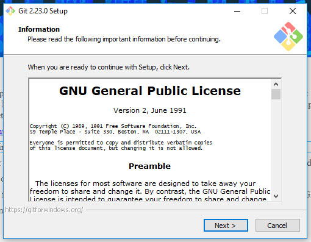
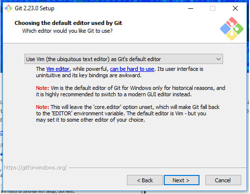
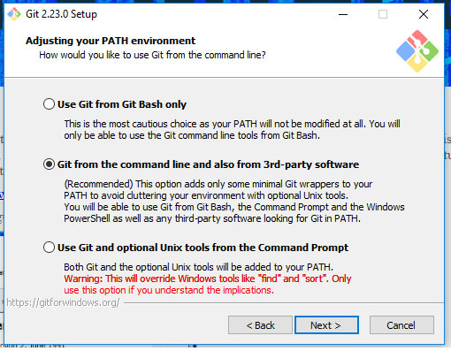
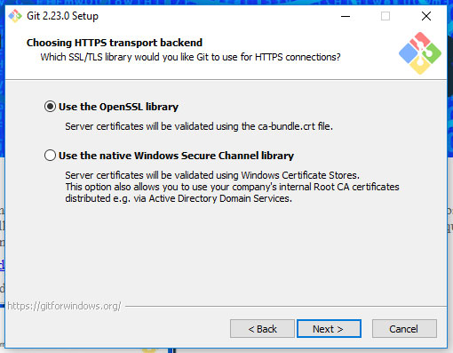
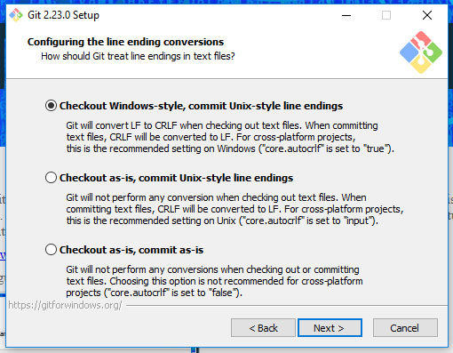
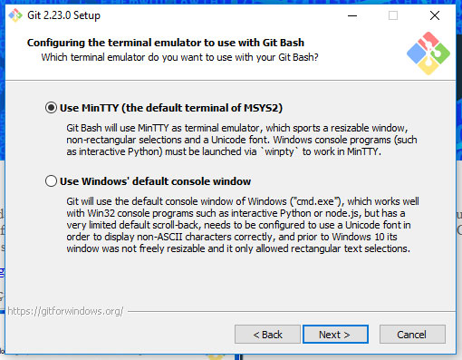

Instalação no Windows
Para instalar o GIT no Windows é muito simples basta seguir os passos à baixo:
- Acesse https://git-for-windows.github.io/ e faça download do GIT para Windows.
- Inicie a instalação, seguindo as instruções na tela, clicando em Next. 
- Selecione qual editor padrão deseja utilizar no GIT. 
- Selecione onde os comandos do GIT serão usados.
(Recomendado a 2ª opção, onde utliza-se linha de comando e softwares de terceiros).

- Escolha a biblioteca de validação de chaves que achar apropriada e clique em Next. 
- Escolha como o GIT deverá tratar as quebras de linhas de arquivos de texto.
Windows utiliza CRLF (Carriage Return Line Feed) e Linux utiliza LF (Line Feed)
- Converter LF para CRLF ao baixar arquivos e CRLF para LF ao comitar.
- Baixar como é (não converte nada), mas comitar convertendo CRLF para LF.
- Não converter nada, baixar como é e comitar como estiver.

- Escolha qual o emudalor de terminal deseja utilizar no GIT. 
- Próximo passo, temos que configurar o GIT acesse: Configuração